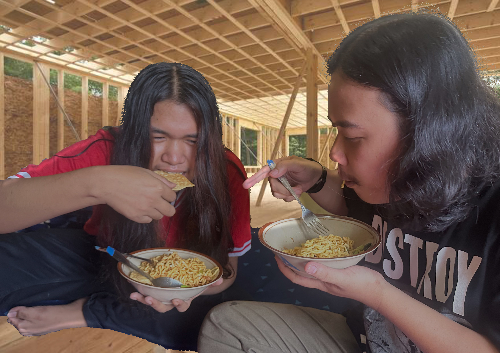

Hubungi Kami :
ABOUT US


Our History
Bakso Mas Alit merupakan tempat yang cukup terkenal oleh mahasiswa mahasiswa Unikom dan sekitarnya. Bakso Mas Alit ini sudah ada sejak 2002, namun dahulu ia belum memiliki toko tetap untuk berjualan jadi ia hanya mengandalkan jualan bakso keliling saja saat itu. Seiring berjalan nya waktu dan Bakso Mas Alit ini semakin laku akhirnya Bakso Mas Alit berkembang ia menjadi mempunyai jtoko tetap di daerah Tubagus Ismail. Namun awal mula adanya Bakso ini Mas Alit juga tidak membuat rencana atau niat dari jauh hari kalau suatu saat ia akan berjualan bakso selama ini. Karena awalnya Mas Alit hanya melihat tukang bakso yang sering ia lewati dan ia berpikir “sepertinya enak ya melihat orang berjualan bakso” . pelayanannya pun sangat ramah dengan raut wajah yang selalu tersenyum, untuk sekitaran yang dekat, bisa diantarkan sampai ke kost atapun rumah. Jadi kita hanya tinggal menghubungi saja. Hingga berjalannya waktu akhirnya tidak disangka sangka Mas Alit pun berjualan sudah hampir 21 tahun,lalu berjalannya perkembangan jaman, mas alit mulai membuka di online dan dari ini sangat membantu sekali yang tadi jangkauan- nya hanya di daerah sekitar kemudian bisa dijangkau lebih luas lagi.